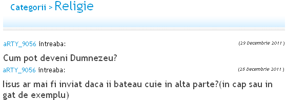

Iată ce vor puştii anului 2012 să devină atunci când vor fi mari. Sau chiar mai repede de atât. Dat fiind că îşi tratează cu seriozitate aspiraţiile, ei sunt preocupaţi şi de unele detalii istorice mai tehnice:

Aspiraţii şi preocupări
Ambele întrebări au fost puse pe site-ul TPU.ro, locul unde cele mai analfabete întrebări îşi găsesc răspunsuri stupide pe măsură.
Când libertatea de a procrea şi dreptul de a-ţi educa progeniturile sunt abuziv folosite, apar astfel de specimene. Se fac mari şi se înmulţesc, la rândul lor, fără ca nimeni să le ceară vreodată permisul de părinte.
Iar dacă, prin absurd, un astfel de aviz ar fi necesar, la “Autoritatea Naţională pentru Permise Parentale” numirile s-ar face pe criterii politice. Fireşte, românii noştri ar da şpagă pentru a obţine autorizaţia, iar specia homo insapiens ar continua reproducerea.

ile")


{kind=link}
{kind=link}
ati inceput deja sa cenzurati comentarii?
N-am început, ci continuăm să ştergem frenetic comentarii însoţite de adrese precum eu@ a.ro, gica@ gmail.com sau, şi mai original, 1@ 1.com.
Nu cerem adresa “oficială” pe care corespondezi cu amanta, ci doar una existentă. Doritorii îşi pot face o adresă ca GianiSefulBanilorGrei69@ yahoo.com cu care doar să comenteze ici-colo. Durează fix 2 minute, am cronometrat.
pai, daca pe mine ma cheama gica si sunt de la moldova, io ce sa fac, sa-mi schimb numele? nu pot.
Pe mine poate mă cheamă Bamse şi sunt de la Băicoi, dar tot am un email valid Care nu e de forma bamse@ băicoieni.net.
Care nu e de forma bamse@ băicoieni.net.
Uneori există părinți ca ăstia.
Urmatorul pas se va întâmpla și in România,dar cu ciolan afumat.
@Gavozdita, avem deja şi în România. La ultima cântărire statistică, 40% dintre copiii români erau supraponderali.
Comments on this entry are closed.